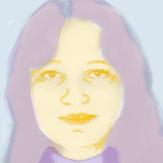
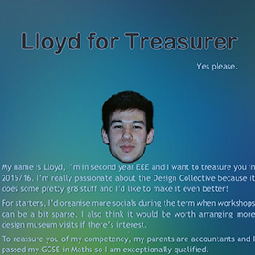
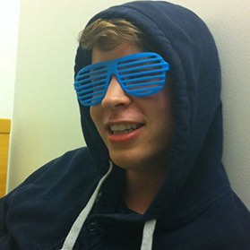
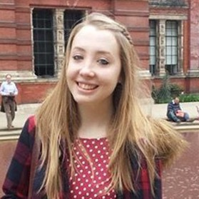
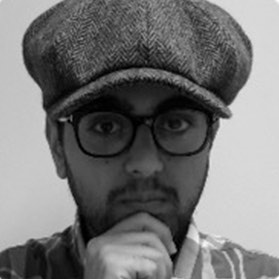
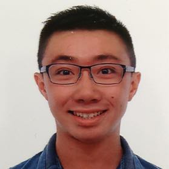

Elinor Merkier
2nd Year, Aeronautical Engineering
Running for: President
Reasons for running:
Design is everywhere; In the food industry, buildings, underground; and the way we live our life depends on it. It will be my aim to bring together a diverse range of design disciplines, and provide a place for people to explore as many paths and ideas in design beyond the academic course. Great events and workshops, for example the 3d printing workshop and Arduino course, will be ensured to happen again next year. I will be good for the role because:- Especially with the new design engineering course at imperial, it will be very insightful to discuss and collaborate with this department, and I will ensure to develop the connection and bring these opportunities.
- I want to continue and strengthen the connection to the entrepreneur world, and encourage events that involve design for start-ups, such as product design, graphic design, etc.
- Art, design and engineering are very important to me; I enjoy making logos which i provided a small business, and as publicity officer I have designed posters and leaflets.
- Also I have been a treasurer this year so I will input my experience with management group meetings and communicating with the union to run ICDC smoothly.
- I have previously lead and coordinated weekly events in my youth group, and will bring what I know to ensure that all the committee is well run and informed, and that good ideas for activities will be brought to reality.
Alessandra Nilsson-Ladner
1st Year, Mechanical Engineering
Running for: President, Secretary or Events Officer

Reasons for running:
- Spread the word of ICDC, focusing on other departments as Mech eng/ Civ eng makes up most of the collective at the moment.
- Get started early on finding contacts for talks and workshops, and again (maybe) branch out to bio-medical design, wearable tech., interaction design etc.
- More socials, expanding exhibition visits to film screenings, gigs and nights out - all somehow design related of course :)
- My first undergraduate degree was in fashion design so I get the need for a creative outlet under the imperial workload.
- Enjoy the drawing, I'm starting to think the yellow face was misjudged...
LLoyd Abbott
2nd Year, Electrical & Electronic Engineering
Running for: Treasurer or Graphic Designer

Reasons for running:
"Lloyd for Treasurer, Yes please." My name is LLoyd, I'm in second year EEE and I want to treasure you in 2015/16. I'm really passionate about the Design Collective because it does some pretty gr8 stuff and I'd like to make it even better! For starters, I'd organise more socials during the term when workshops can be a bit sparse. I also think it would be worth arranging more design museum visits if there's interest. To reassure you of my competency, my parents are acccountants and I passed my GCSE in Maths so I am exceptionally qualified.Andrew Goodhead
3rd Year, Mechanical Engineering
Running for: Graphic Designer

Reasons for running:
Having joined ICDC at the beginning of the year I have enjoyed being part of the society and attending many of its events. In the coming year I would like to become more actively involved. I have a strong interest and a natural aptitude in design which I would like to bring to the society. Finally, I am a confident graphic designer of proven ability with significant experience in using the Adobe Creative Suite.Katy Sayer
3rd Year, Mechanical Engineering
Running for: Secretary

Reasons for running:
Hello ICDCer's, for those of you who don't know me, I'm Katy, a third year Mechanical Engineer with a strong passion for design. I think I would be a great Secretary because I am known to write ridiculously quickly, have lots of experience of how clubs & societies at Imperial are run, and have a bit of an addiction to eActivities. Having sat on the Arts & Entertainment Board as Chair of String Ensemble this year, I not only have in depth knowledge and experience of how to interact with the Union in order to get things done, but I have lots of connections with the other AEB societies, and I would be keen to organise inter-society collaborations. For example, I think it was a shame that ICDC did not participate in ArtsFest week this year, and I would love to organise for ICDC to showcase its members' incredible talent at public events such as this and the Artsfest Fringe in order to further the reach of the society, and to increase ICDC's interactions with the other AEB societies. Hopefully I will be elected to send you all some very witty and informative emails next year, as well as contributing to the general running of the society. Please vote for me!Fares Siddiqui
3rd Year, Mechanical Engineering
Running for: President

Reasons for running:
Dear ICDC, I am the guy that wears that hideous hat around Mech Eng. You may think I’m a train conductor, a chimney sweep or someone’s grandpa but thankfully my parents have blessed me with a proper name, Fares. I write to express my interest in running for the ICDC President position for 2015/16. My proposition is simple: I seek to create a conducive environment where members are not only inspired and educated on the power of design, but also consolidate their experiences with practical skills. I intend on expanding and initiating the following activities: Crafts workshops ( Wood, Metal, Plastics, Pottery & ceramics, Textiles ) Skills clinics ( Conceptual Design, Sketching, Brainstorming, User Interface and User Experience Design, Interaction Design, Computer Aided Design, Designing for manufacture, Prototyping ) Careers talks, Inspirational talks (guest speakers), Product, service or system design consultancy projects for firms My passion for design is evoked by the fact that in the summer of 2014, I started my own design engineering holdings firm, which I manage alongside university. My current projects cover the following industries: agriculture, fashion, technology and consumer products. The goal is simple - to fuse design thinking and engineering, creating an intersection which results in the greatest opportunity to provide ground-breaking innovations. If you wish to have a positive and meaningful year full of surprises, then look no further! I look forward to a fantastic year ahead with the ICDC community. Yours truly, Fares SiddiquiTsz Hei Choi (Kelvin)
2nd Year, Physics
Running for: Graphic Designer
